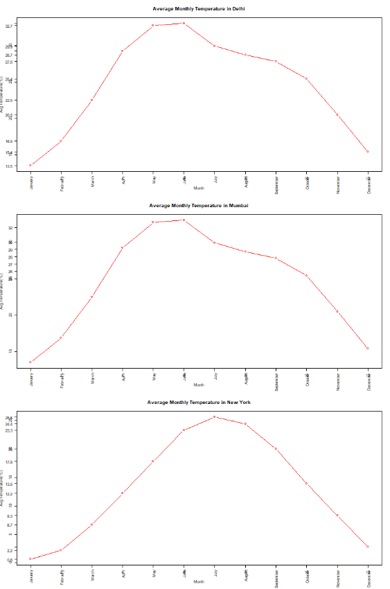

Project 1: U.S. Murders Data Analysis
This project analyzes murder rates by state using various visualizations.
Tech Used: R (dslabs, base plotting)

Project 2: Monthly Temperature Comparison
Compared average monthly temperatures of Delhi, Mumbai, and New York.
Tech Used: R (base plotting)
